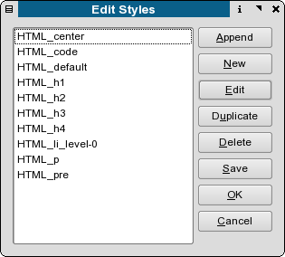
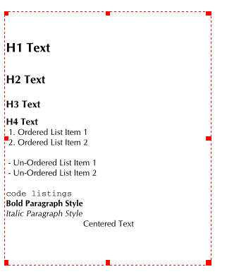

Scribus has an HTML importer which can import clean, well formed HTML and retain much of the layout and and formatting, provided the formatting or styling is basic HTML in the HTML markup, not via css style sheets. CSS support will come in the future.
Upon import, the importer will create paragraph styles which correspond to the html markup. Bold, Italics and monospace text and alignment are also supported. Below is a listing of the HTML markup supported - both upper and lower case tags.
<?xml version="1.0" encoding="utf-8"?> <!DOCTYPE html PUBLIC "-//W3C//DTD XHTML 1.0 Transitional//EN" "http://www.w3.org/TR/xhtml1/DTD/xhtml1-transitional.dtd"> <html xmlns="http://www.w3.org/1999/xhtml"> <head> <title></title> <meta http-equiv="Content-Type" content="text/html; charset=utf-8" /> </head> <body> <h1>H1 Text</h1> <h2>H2 Text</h2> <h3>H3 Text</h3> <h4>H4 Text</h4> <ol> <li>Ordered List Item 1 </li> <li>Ordered List Item 2 </li> </ol> <ul> <li>Un-Ordered List Item 1 </li> <li>Un-Ordered List Item 2 </li> </ul> <code>code listings</code> <p><b>Bold Paragraph Style</b></p> <p><i>Italic Paragraph Style</i></p> <p align="center">Centered Text</p> </body> </html>
Below the imported styles from the file above.
|  |
Below is the imported text displayed on the canvas:
|  |
Not all applications export HTML with high fidelity to the W3C specifications. You can use htmltidy to clean up and make conformant HTML text you need to import. See : http://w3c.org